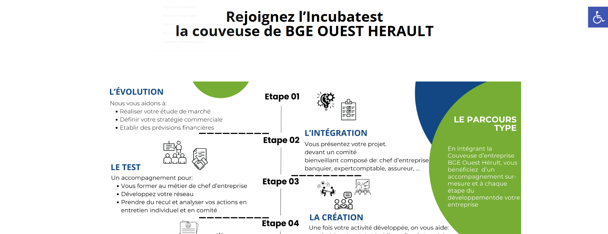
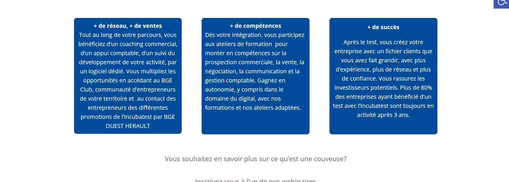
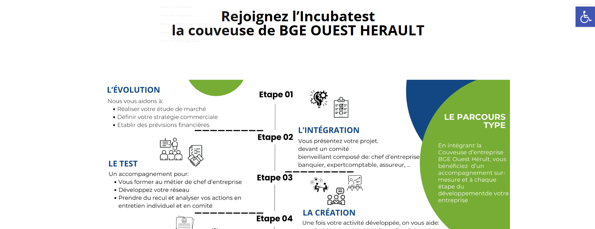
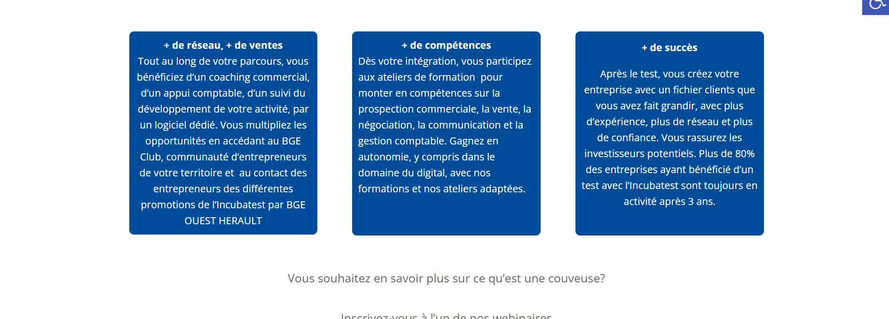

Mes sites

Le Pokedex
En tant que groupe, nous avons entrepris la création d'un site internet sur le thème des Pokémon. J'ai éprouvé une grande joie à contribuer à ce projet en apportant mes idées et en les mettant en pratique à l'aide de l'HTML, du CSS et du JavaScript. Bien que notre professeur nous ait donné une maquette initiale, nous avons dû la perfectionner. De mon côté, j'ai réussi à ajouter une fonctionnalité de bouton d'évolution, un effet de changement d'image de la Pokéball lorsque le curseur de la souris passe dessus et j'ai également travaillé sur l'esthétique générale du site. Grâce à mes professeurs et à mon groupe, j'ai pu faire évoluer mon niveau. Je me suis concentré davantage sur le JavaScript pour pouvoir rendre le site plus dynamique. J'ai adoré réaliser mes missions et améliorer ce site me plaisait énormément. De plus, le thème de Pokémon me donnait encore plus d'imagination. Nous voulions le faire ressembler à un Pokédex moderne. Nous avons aussi ajouté de petites références au dessin animé dans le texte que nous avions mis et également dans le site en lui-même. C'était sans aucun doute l'un des projets les plus ambitieux et les plus complexes que j'ai jamais réalisés, et je suis extrêmement fière du résultat final.
cliquez ici pour voirCinequest
Dans le cadre de ce projet, j’ai conçu et développé de manière autonome un site web dédié aux films et séries, en utilisant Flask et PHP, avec une intégration complète d’une base de données. Le site propose plusieurs fonctionnalités avancées, notamment : Système de recherche et de filtrage : Permettant aux utilisateurs de trouver des films et séries en fonction de critères spécifiques. Gestion des sessions : Incluant l’authentification et la personnalisation de l’expérience utilisateur. Favoris : Mise en place d’un système permettant aux utilisateurs de sauvegarder et gérer leurs films et séries préférés. J’ai également veillé à offrir un design moderne, ergonomique et esthétiquement agréable, en mettant l’accent sur une expérience utilisateur fluide et intuitive. Ce projet a renforcé mes compétences en développement full stack, gestion de bases de données et création d’interfaces web.
Jeu vidéo
Voici une version enrichie et professionnelle de votre description : Dans le cadre d’un projet collaboratif, nous avons développé un jeu vidéo en utilisant JavaScript et le framework Phaser. Ce projet a nécessité la création d’une histoire originale et sa mise en scène à travers le code, combinant narration et gameplay interactif. L’équipe était composée de trois graphistes et de deux développeurs, ce qui m’a permis de collaborer efficacement dans un environnement multidisciplinaire. En tant que développeur, j’ai contribué à : La mise en œuvre des mécaniques de jeu et de la logique narrative. L’intégration des assets graphiques créés par l’équipe de graphistes. La gestion des interactions utilisateur et la fluidité du gameplay. Ce projet a renforcé mes compétences en développement front-end et en travail d’équipe, tout en me permettant de relever les défis techniques liés à la création d’un jeu vidéo immersif et engageant.
Pokemon
Dans le cadre de ce projet, j’ai développé un site web intégrant un back-end et un front-end complet en utilisant des technologies modernes : Back-end : Laravel pour la gestion de la base de données et la logique métier. Front-end : Tailwind CSS pour le design réactif et Angular avec TypeScript pour l’interactivité et la gestion des composants. L’objectif du projet était de créer un Pokédex, en respectant une maquette fournie. Le site devait inclure plusieurs fonctionnalités interactives, notamment : Système de filtrage et de recherche : Permettant aux utilisateurs de rechercher et trier les Pokémon selon différents critères. Changement de langue : Offrant une expérience multilingue pour les utilisateurs. Ce projet m’a permis de consolider mes compétences en développement full stack, en intégration de maquettes, et en ajout de fonctionnalités avancées, tout en respectant des exigences précises et une expérience utilisateur optimale.
 



Site BGE Oeust hérault
Lors de mon stage, j’ai contribué à l’enrichissement et à la personnalisation de leur site internet en utilisant le plugin Divi. Mon travail a consisté à : Adapter le design du site à l’identité visuelle et à la direction artistique de l’entreprise, en respectant ses lignes directrices. Créer des pages web harmonieuses et fonctionnelles, alignées sur leurs besoins spécifiques en termes de communication et d’image de marque. Optimiser l’expérience utilisateur en veillant à la fluidité et à l’ergonomie des interfaces. Ce projet m’a permis de développer mes compétences en web design, en intégration avec des outils CMS comme Divi, ainsi qu’en collaboration avec des équipes orientées sur l’aspect créatif.
cliquez ici pour voir